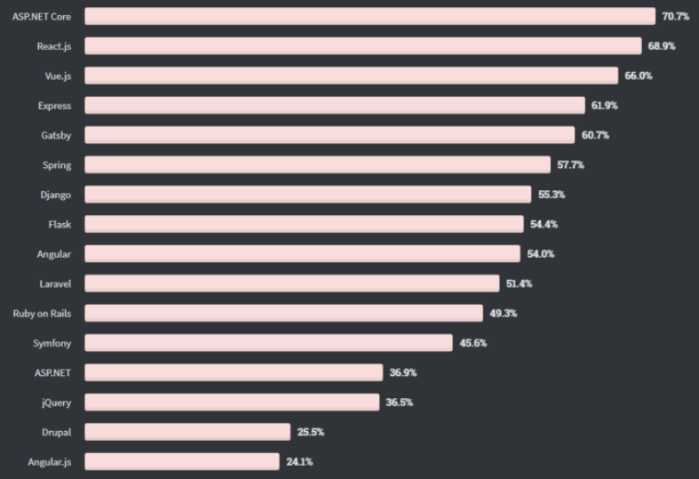
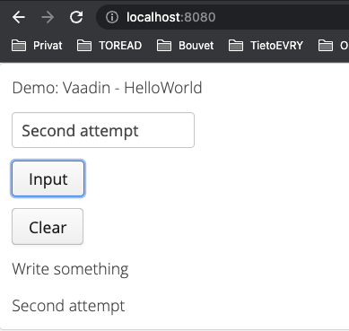

Web Development: Frameworks
Created by Lasse Jenssen
(Based on material from Atle Geitung, 2021)
Agenda: Using Web Frameworks
- What is a framework?
- Pros and cons: Why use frameworks?
- Types of Web Framworks
- Action Based Web Frameworks
- Component Based Web Framework
- Introduction to Spring Web MVC (later)
- Introduction to Thymeleaf (later)
Introduction to Web Framworks
What is a Framwork?
Definition from wiki: http://en.wikipedia.org/wiki/Framework
"A framework is a generic term commonly referring to an essential supporting structure which other things are built on top of."
Introduction to Web Framworks
What is a Web Framwork?
Definition from wiki: https://en.wikipedia.org/wiki/Web_framework
"A software framework that is designed to support the development of web applications including web services,
web resources, and web APIs.
Web frameworks provide a standard way to build and deploy web applications on the World Wide Web, and
aim to automate the overhead associated with common activities performed in web development."
Introduction to Web Framworks
Pros:
- Supposed to simply the development.
- Faster and more robust code (but faster is not always better).
- Common architecture that project/ team/ department follows.
- Less own code to maintain.
- Comunitity: Get help or assistance from other users.
- Offers:
- Easy and flexible way to configure (XML, Annotations, property files etc)
- Tab library (for instance validating input in Ajax)
- Class libraries
- And much more ...
Introduction to Web Framworks
Cons:
- High startup cost: a lot to learn.
- Many frameworks to choose from.
- Framework implementation might not be the best approach for ALL your problems.
- Dependency/ "lock-in".
Types of Web Frameworks
- Types:
- Client-side Web Frameworks: For instance: Angular, Vue, React (you have looked at React earlier).
- Server-side Web Frameworks: Todays agenda.
Types of Web Frameworks
- A common classification of web frameworks is based on the "programming model" being offered the developer.
- Web applications have a core with a programming model based on the
request-response over a stateless protocol, HTTP (Servlet). - Types:
- Action-based: Frameworks that exposes the request-response model, linking "actions" up to URLs (requests).
- Component-based: Frameworks that hides the request-response model behind UI components (+events).
- Also more specialized frameworks, for example RIA (Client-Side: Angular, React, Vue).
- Note! Not always a clear distinction.
Use of frameworks 2022
Action based Web Frameworks (MVC)
Examples of action-based framworks:
- Struts2 (Java)
- Spring Web MVC (Java/ Kotlin/ Groovy)
- PlayFramework (Java / Scala)
- Rails (Ruby)
- Grails (Groovy)
Component Based Web Frameworks
Examples of component-based frameworks:
- Vaadin (Java) : We'll have a quick look at this.
- GWT (Java) : GWT is a development toolkit for building and optimizing complex browser-based applications.
- ASP.NET WebForms (MVVM): a part of the ASP.NET web application framework
Component Based Web Frameworks
Also some Component-based Desktop Frameworks:
- Java Swing: a GUI widget toolkit for Java. It is part of Oracle's Java Foundation Classes (JFC) - an API for providing a graphical user interface (GUI) for Java programs.
- JavaFX: (https://openjfx.io/) - an open source, next generation client application platform for desktop, mobile and embedded systems built on Java.
- Java SWT (https://www.eclipse.org/swt/): an open source widget toolkit for Java designed to provide efficient, portable access to the user-interface facilities of the operating systems on which it is implemented.
- Qt - (C++, Python, etc)
Demo: HelloWorldUI (Vaadin)
- Intro application with a few simple components (Label, TextField, Button).
- We are NOT going to code with Vaadin.
(Code in this section: Only to show the concept).
Code: demo-component-based-vaadin.zip (see course overview).
Demo: HelloWorldUI (Vaadin)
Demo: HelloWorldUI (Vaadin)
src/main/java/no/hvl/dat152/helloworld/HelloWorldUI.java
@Theme("mytheme")
public class HelloWorldUI extends UI {
private static final long serialVersionUID = 1L;
@Override
protected void init(VaadinRequest vaadinRequest) {
Panel contentPane = new Panel();
VerticalLayout layout = new VerticalLayout();
Label lblHeading = new Label();
helloworldLabel.setValue("Demo: Vaadin - HelloWorld");
layout.addComponent(lblHeading);
...
contentPane.setContent(layout);
setContent(contentPane);
}
@WebServlet(urlPatterns = "/*", name = "HelloWorldUIServlet", asyncSupported = true)
@VaadinServletConfiguration(ui = HelloWorldUI.class, productionMode = false)
public static class HelloWorldUIServlet extends VaadinServlet {
private static final long serialVersionUID = 1L;
}
}
Demo: HelloWorldUI (Vaadin)
src/main/java/no/hvl/dat152/helloworld/HelloWorldUI.java
@Override
protected void init(VaadinRequest vaadinRequest) {
Panel contentPane = new Panel();
VerticalLayout layout = new VerticalLayout();
Label lblHeading = new Label();
lblHeading.setValue("Demo: Vaadin - HelloWorld");
TextField textField = new TextField();
textField.setValue("Write something");
Button okButton = new Button("Input");
...
Button clearButton = new Button("Clear");
...
layout.addComponent(lblHeading);
layout.addComponent(textField);
layout.addComponent(okButton);
layout.addComponent(clearButton);
contentPane.setContent(layout);
setContent(contentPane);
}
Demo: HelloWorldUI (Vaadin)
src/main/java/no/hvl/dat152/helloworld/HelloWorldUI.java
@Override
protected void init(VaadinRequest vaadinRequest) {
...
Button okButton = new Button("Input");
okButton.addClickListener(event -> {
Label newLabel = new Label();
newLabel.setValue(textField.getValue());
layout.addComponent(newLabel);
} );
Button clearButton = new Button("Clear");
clearButton.addClickListener(event -> {
layout.removeAllComponents();
layout.addComponent(lblHeading);
layout.addComponent(textField);
layout.addComponent(okButton);
layout.addComponent(clearButton);
} );
layout.addComponent(lblHeading);
...
contentPane.setContent(layout);
setContent(contentPane);
}
Demo: HelloWorldUI (Vaadin)
Let's look at the code in Eclipse, and run.
Code: demo-component-based-vaadin.zip (see course overview).
Summary: Web Development: Frameworks
Where are we now?
- Frameworks are there to assist in our daily programming life.
- A lot of frameworks to choose from.
- Most often the project or company choose the frameworks to be used.
Next